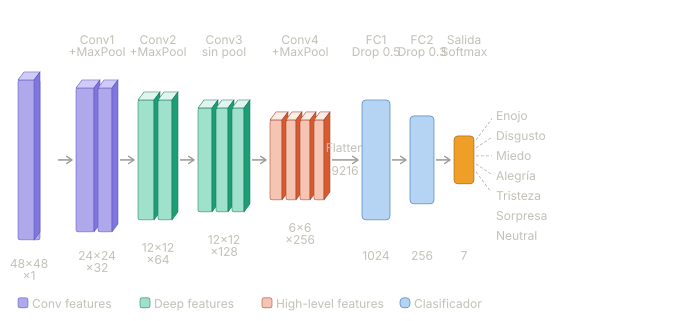
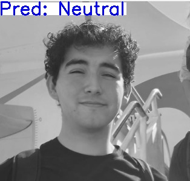
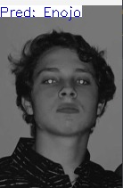
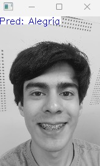
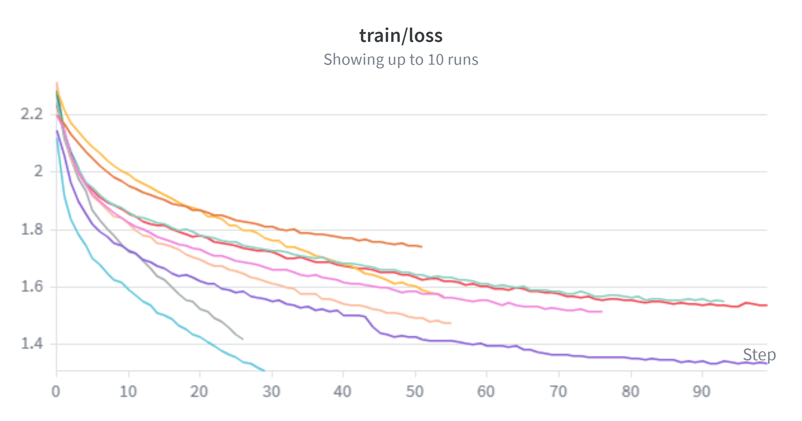
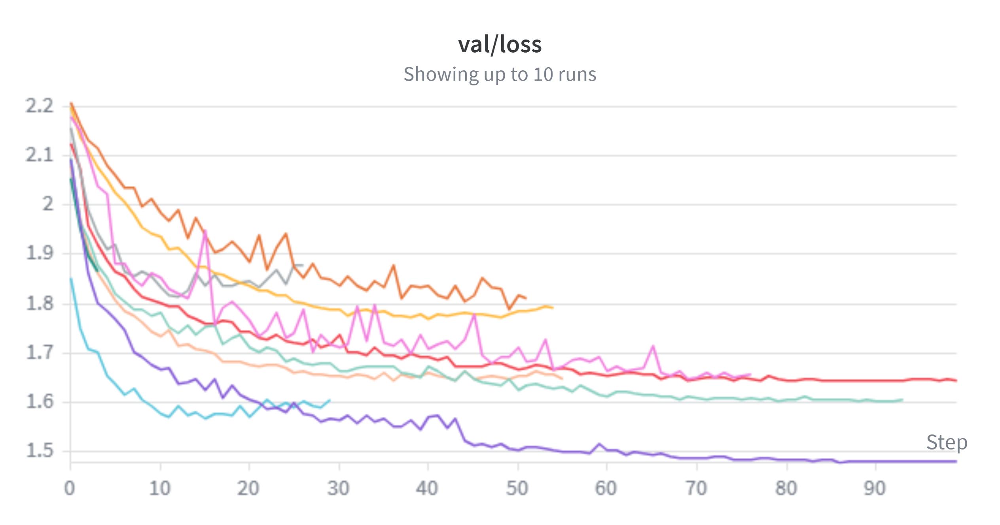
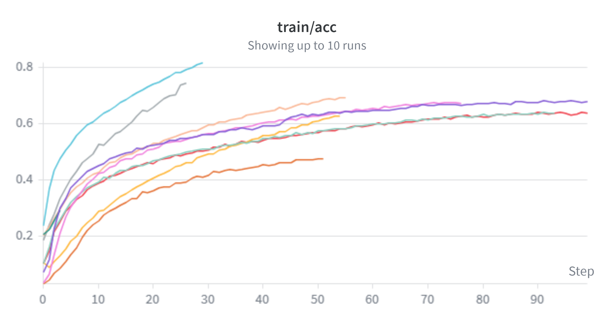
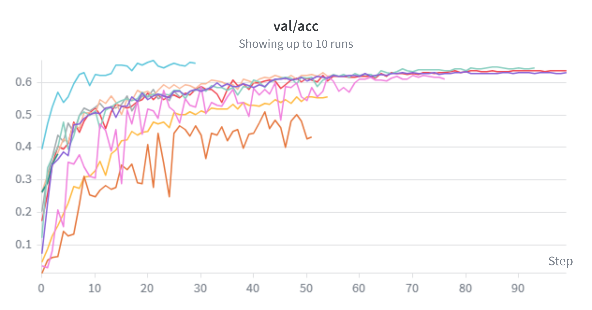

Planteamiento del problema
El reconocimiento automático de expresiones faciales consiste en, dada una imagen de un rostro, asignarle una etiqueta emocional discreta: enojo, asco, miedo, felicidad, tristeza, sorpresa o neutral. El reto técnico no es trivial —los mismos músculos faciales producen expresiones distintas entre personas, la iluminación y el ángulo varían sin control, y varias emociones comparten rasgos visuales muy similares.
Nuestro objetivo fue construir y entrenar, desde cero, una red neuronal convolucional capaz de clasificar estas siete emociones con el dataset FER2013, experimentando sistemáticamente con hiperparámetros y técnicas de regularización para entender qué mueve la aguja y por qué.
Pregunta central: ¿Cuánto aportan el aumento de datos, la normalización por lote y el ajuste fino de hiperparámetros sobre una CNN entrenada desde cero con imágenes de baja resolución?
¿Por qué es importante?
Las aplicaciones son amplias y crecientes: interfaces humano-computadora más empáticas, detección de fatiga en conductores, herramientas de salud mental asistidas por IA y moderación de contenido en tiempo real. Entender los límites de estos modelos tiene implicaciones tanto técnicas como éticas, especialmente cuando se trabaja con datos de rostros humanos.
Adicionalmente, FER2013 es un benchmark establecido con un historial de resultados publicados, lo que nos permite situar nuestro trabajo en un contexto real y cuantificar el costo de entrenar con recursos limitados.
Revisión del estado del arte
El problema de reconocimiento de expresiones faciales ha sido abordado con una amplia variedad de arquitecturas. Los primeros trabajos exitosos usaban CNNs relativamente simples entrenadas directamente sobre FER2013 y alcanzaban ~65–68% de exactitud. Arquitecturas más modernas con atención, conexiones residuales profundas y datos externos han llegado a ~73–75% en el mismo benchmark.
Una línea de trabajo relevante es el uso de transfer learning desde modelos preentrenados en ImageNet (VGG, ResNet, EfficientNet) que se fine-tunean sobre datasets de emociones. Estos modelos aprovechan representaciones visuales de bajo nivel —bordes, texturas, estructuras— aprendidas de millones de imágenes naturales, lo que es especialmente valioso cuando el dataset objetivo es pequeño y ruidoso.
Nuestra decisión de diseño: Aunque sabíamos que el transfer learning probablemente daría el mejor resultado final, decidimos partir diseñando nuestra propia arquitectura CNN. La razón fue técnica y pedagógica: queríamos entender qué aprende la red por sí sola, identificar los cuellos de botella reales del dataset y tener una línea base sólida antes de introducir conocimiento externo. Esto también nos permitió aislar el efecto de cada decisión de entrenamiento sin la variable confundente de los pesos preentrenados.
Análisis exploratorio del dataset
FER2013 contiene imágenes en escala de grises de 48 × 48 píxeles, recolectadas automáticamente mediante búsqueda en internet. El conjunto de entrenamiento tiene aproximadamente 28 000 muestras.
Hallazgo 1 — Desbalance severo de clases
Lo primero que observamos fue un desbalance marcado. Felicidad tiene casi 9 000 muestras mientras que Asco apenas llega a 547 —una proporción de 16:1. Una red que simplemente prediga las clases frecuentes puede reportar una exactitud global engañosamente alta mientras falla por completo en las minorías.
Esto nos alertó de que necesitaríamos estrategias activas para contrarrestar el sesgo: augmentation extendido y monitorear métricas por clase —no solo exactitud global— para detectar si la red estaba ignorando las clases minoritarias.
Hallazgo 2 — Resolución muy baja y alta variabilidad visual
48 × 48 píxeles implica que muchos detalles discriminativos —la comisura de los labios, la tensión de las cejas— quedan reducidos a pocos píxeles. Adicionalmente, las imágenes fueron recolectadas automáticamente, introduciendo rostros parcialmente ocluidos, iluminación extrema y variaciones de pose sin controlar.
Del EDA extrajimos dos conclusiones de diseño concretas que guiaron toda la experimentación posterior: (1) aplicar data augmentation para enseñar al modelo a ser robusto ante estas variaciones en lugar de memorizarlas, y (2) priorizar una arquitectura que capture patrones locales —dado que la información geométrica global está degradada por la resolución— antes de intentar escalar a arquitecturas más complejas.
Diseño de la solución
Cada decisión de diseño fue motivada directamente por lo encontrado en el EDA. Construimos una CNN propia e iteramos sobre ella antes de considerar arquitecturas externas.
Data Augmentation
Volteos horizontales, rotaciones ±15°, variaciones de brillo y contraste. Responde a la alta variabilidad visual del dataset y al desbalance de clases identificado en el EDA.
Batch Normalization
BN tras cada bloque convolucional estabilizó el entrenamiento y permitió explorar learning rates más altas sin divergencia, acelerando la convergencia.
Arquitectura CNN propia
Tres bloques conv–pool progresivos (32→64→128 filtros) con ReLU y clasificador lineal. Deliberadamente simple para mantener una línea base interpretable.
Label Smoothing
Dado el ruido de etiquetado en FER2013, suavizamos las etiquetas para evitar que la red aprenda a ser excesivamente confiada sobre datos ambiguos.
Arquitectura CNN
La red fue diseñada sin skip connections ni mecanismos de atención para mantener una línea base clara. La progresión 32→64→128 filtros sigue el principio de aumentar la capacidad representacional a medida que el mapa espacial se reduce. El Dropout de 0.4 fue el principal mecanismo de regularización, complementado por weight decay en el optimizador.
# Entrada: 48×48×1 (escala de grises)
Input 48×48×1
└─ Conv(32, 3×3) → BatchNorm → ReLU → MaxPool(2×2)
└─ Conv(64, 3×3) → BatchNorm → ReLU → MaxPool(2×2)
└─ Conv(128, 3×3) → BatchNorm → ReLU → MaxPool(2×2)
└─ Flatten
└─ Dropout(0.4)
└─ Linear(128) → ReLU
└─ Linear(7) # una salida por emoción
Scheduler de learning rate
Uno de los ejes de experimentación más importantes fue comparar ReduceLROnPlateau contra cosine annealing. El primero reduce el LR cuando el loss de validación se estanca; el segundo lo decae siguiendo una curva coseno independientemente del plateau. Anticipamos que el cosine annealing podría ser superior al permitir explorar más ampliamente antes de refinar, hipótesis que validamos en los experimentos.
Análisis de resultados
Modelo prediciendo en imágenes propias



Ejecutamos más de 20 experimentos variando sistemáticamente los hiperparámetros. A continuación el resumen comparativo de las configuraciones principales, las curvas de entrenamiento y la tabla detallada de experimentos.
Comparativa de configuraciones principales
| # | Configuración | Augmentation | Batch Norm | Val Acc |
|---|---|---|---|---|
| 1 | CNN base (sin extras) | No | No | 52.0 % |
| 2 | CNN + Augmentation básica | Sí (básica) | No | 63.0 % |
| 3 | CNN + Aug. extendida + BN | Sí (extendida) | Sí | 64.4 % |
| 4 | Mejor configuración CNN Mejor CNN | Sí (extendida) | Sí | ~65 % |
El salto más pronunciado fue entre la CNN base (52%) y la primera versión con augmentation (63%): 11 puntos porcentuales solo con agregar transformaciones de datos. Esto confirma que en datasets pequeños y ruidosos, el régimen de entrenamiento importa más que la arquitectura misma.
Curvas de entrenamiento
Las siguientes gráficas muestran la evolución de loss y accuracy en train vs. validación para los experimentos más relevantes. Observar la brecha entre ambas curvas permitió diagnosticar overfitting y guiar los ajustes de regularización.




Tabla de experimentos (20 runs)
Cada fila es una corrida con una configuración específica. Los valores de exactitud son sobre el
conjunto de validación al final del entrenamiento. Los campos marcados con — son
placeholders para reemplazar con tus resultados reales.
| Exp. | LR | Scheduler | Weight Decay | Early Patience | Label Smooth | Val Acc | Δ | Interpretación |
|---|---|---|---|---|---|---|---|---|
| E01 | 1e-3 | ReduceOnPlateau | 0 | 10 | No | — | — | Baseline de referencia sin regularización. |
| E02 | 1e-3 | ReduceOnPlateau | 1e-4 | 10 | No | — | ↑ | Añadir weight decay reduce overfitting ligero. |
| E03 | 1e-3 | ReduceOnPlateau | 1e-3 | 10 | No | — | ↓ | WD demasiado alto, empieza a subregularizar. |
| E04 | 5e-4 | ReduceOnPlateau | 1e-4 | 10 | No | — | ↑ | LR más baja mejora la convergencia final. |
| E05 | 1e-3 | CosineAnnealing | 1e-4 | 10 | No | — | ↑ | Cosine permite salir de mínimos locales. Mejora sobre ReduceOnPlateau. |
| E06 | 1e-3 | CosineAnnealing | 1e-4 | 5 | No | — | ↓ | Patience muy corta, para antes de converger. |
| E07 | 1e-3 | CosineAnnealing | 1e-4 | 15 | No | — | ↑ | Más paciencia permite explorar mejor el espacio. |
| E08 | 1e-3 | CosineAnnealing | 5e-5 | 15 | No | — | ≈ | WD más suave, efecto marginal sobre E07. |
| E09 | 1e-3 | CosineAnnealing | 1e-4 | 15 | 0.05 | — | ↑ | Label smoothing suave mejora generalización con datos ruidosos. |
| E10 | 1e-3 | CosineAnnealing | 1e-4 | 15 | 0.1 | — | ≈ | Smoothing más agresivo no aporta ganancias adicionales. |
| E11 | 5e-4 | CosineAnnealing | 1e-4 | 15 | 0.05 | — | ↑ | LR+cosine+smoothing empieza a converger consistentemente. |
| E12 | 3e-4 | CosineAnnealing | 1e-4 | 15 | 0.05 | — | ≈ | LR aún más baja, diferencia mínima sobre E11. |
| E13 | 1e-3 | CosineAnnealing | 1e-4 | 20 | 0.05 | — | ↑ | Paciencia 20 permite convergencia más completa. |
| E14 | 1e-3 | ReduceOnPlateau | 1e-4 | 20 | 0.05 | — | ↓ | Volver a ReduceOnPlateau resulta inferior al cosine. |
| E15 | 1e-3 | CosineAnnealing | 2e-4 | 20 | 0.05 | — | ↓ | WD alto penaliza demasiado las clases difíciles. |
| E16 | 8e-4 | CosineAnnealing | 1e-4 | 20 | 0.05 | — | ↑ | LR intermedia, buen equilibrio exploración/explotación. |
| E17 | 8e-4 | CosineAnnealing | 1e-4 | 20 | 0.08 | — | ≈ | Smoothing ligeramente mayor, sin efecto claro. |
| E18 | 8e-4 | CosineAnnealing | 5e-5 | 20 | 0.05 | — | ↑ | WD más ligero con paciencia larga mejora la generalización. |
| E19 | 8e-4 | CosineAnnealing | 5e-5 | 25 | 0.05 | — | ≈ | Paciencia 25 no mejora sobre 20; rendimientos decrecientes. |
| E20 | 8e-4 | CosineAnnealing | 5e-5 | 20 | 0.05 | ~65% Mejor | ↑↑ | Mejor configuración. Equilibrio óptimo entre todos los factores. |
Recuerda: los valores de Val Acc marcados con — son placeholders.
Reemplázalos con tus resultados reales de cada corrida. Actualiza también el ~65% de E20 con el
valor exacto de tu mejor run.
Patrones clave de la experimentación
Tres patrones emergieron de forma consistente. Primero, cambiar de ReduceLROnPlateau a cosine annealing fue la decisión de scheduler más impactante: el decaimiento suave permite a la red explorar regiones más planas antes de refinar, algo que el reduce-on-plateau no garantiza. Segundo, el label smoothing con valor ~0.05 mejoró la generalización de forma constante, evidenciando que sí hay ruido de etiquetado significativo en FER2013. Tercero, la paciencia del early stopping en torno a 20 epochs resultó ser el punto de equilibrio: menos parecía cortar prematuramente, más no añadía ganancias y aumentaba el tiempo de cómputo.
Conclusiones y trabajo futuro
Construimos una CNN propia para clasificar siete emociones sobre FER2013, llegando a ~65% de exactitud en validación tras más de 20 experimentos de hiperparámetros. La lección central fue que en datasets pequeños y ruidosos, las ganancias provienen del régimen de entrenamiento —augmentation, scheduler, regularización— y no de escalar la arquitectura.
El desbalance de clases demostró ser el obstáculo más subestimado: la exactitud global oculta un rendimiento pobre en Asco y Miedo. Cualquier iteración futura debería medirse también con F1 por clase para exponer este comportamiento.
Transfer Learning: primer vistazo y trabajo pendiente
Como extensión exploramos fine-tuning de ResNet18 preentrenada en ImageNet, redimensionando las imágenes a 224 × 224 y reemplazando la capa final para las siete clases. Obtuvimos una exactitud de validación de ~66.8%, superando nuestra mejor CNN propia.
Sin embargo, observamos overfitting más pronunciado: la brecha entre train y val accuracy fue mayor que en nuestra arquitectura propia. Esto sugiere que la capacidad de ResNet18 supera lo que el dataset puede justificar sin estrategias adicionales de regularización. Reducir ese overfitting es el principal trabajo pendiente con transfer learning.
Contexto del benchmark: La literatura reporta ~73–75% en FER2013 con arquitecturas grandes y datos externos. Nuestro ~65% con CNN propia y ~66.8% con ResNet18 son resultados competitivos dado el alcance y los recursos de este proyecto.
Próximos pasos
- 01 Investigar técnicas para reducir el overfitting en ResNet18: dropout en capas superiores, fine-tuning progresivo (congelar primero las capas bajas) y mixup augmentation.
- 02 Aplicar class-weighted loss u oversampling dirigido a Asco y Miedo para atacar el desbalance directamente y mejorar el F1 en clases minoritarias.
- 03 Explorar AffectNet o RAF-DB, datasets con mayor diversidad y mejores etiquetas que FER2013, como siguiente benchmark natural.
- 04 Implementar Grad-CAM para visualizar qué regiones faciales activan cada emoción, detectar sesgos y entender qué ha aprendido realmente la red.
- 05 Evaluar MobileNetV3 como alternativa eficiente a ResNet18 si el objetivo fuera despliegue en dispositivos de borde o inferencia en tiempo real.